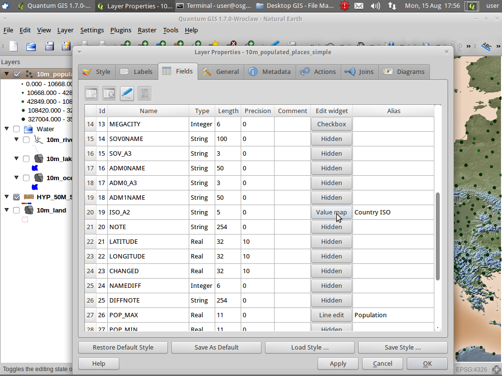

Forms¶
Custom entry form¶
Choose File ‣ Open Project... from the menu bar
Select QGIS-NaturalEarth-Example.qgs and press Open
Zoom in somewhere to speed up redrawing
Click Layer ‣ Add PostGIS Layer....
Press Connect on NaturalEarth connection
Select 10m_populated_places_simple in the table list
Press Add and Close
Double click 10m_populated_places_simple in the Layers tree
Go to the tab Fields and set the Edit widget types:
For the field ISO_A2 create a value map loading data from a layer:

Activate the edit mode and digitize a point to see the new edit form:

{kind=link}
Forms with QT Designer¶
QGIS supports also custom forms, created with the QT GUI Designer. QGIS relies on naming conventions for data fields and expressions. This allows QGIS to run forms created with QT designer without compilation.
For installing QT designer, open a terminal:
- Click Applications ‣ Accessories ‣ Terminal Emulator
- Type sudo apt-get install qt4-designer (Password: user)
Now we create a custom form with QT Designer:
Click Applications ‣ Development ‣ QT 4 Designer
Select “Dialog with Buttons Bottom”
We follow the article on http://woostuff.wordpress.com/2011/09/05/qgis-tips-custom-feature-forms-with-python-logic/
In our case we create an entry form “My custom places” with an entry field name and a read only key field gid
Save it as places.ui in /home/user
Open QGIS again and:
- Double click 10m_populated_places_simple in the Layers tree
- Go to the tab General, choose /home/user/places.ui as Edit UI and press OK
- Activate the edit mode and digitize a point to see your new custom form